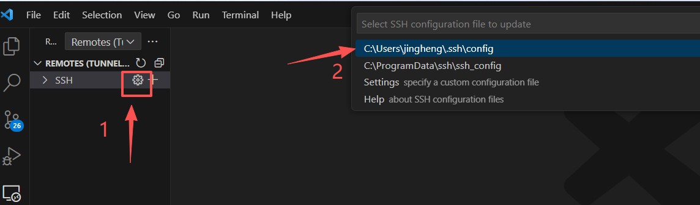

1. Set Up the Environment
1.1. Download and Install Visual Studio Code (VS Code)
Visual Studio Code is a code editor. which can be downloaded from here
Note
Some older servers do not support connections to the latest version of VS Code.
If you are using an older server, it is recommended to use version 1.85.2 or earlier.
You can also use other code editors, but VScode seems the most powerful one.
1.2. Connect VS Code to the Cluster and WSL
Note
If you do not plan to use Auto-calibration, then a cluster is not required.
On Windows, you can simply connect VS Code to WSL to run the model.
install WSL on windows
Search WSL extension on VS code store and install.
Connect WSL in VS code.
How to install WSL and how to connect WSL to VS code is very straightforward. Refer to:
I usually connect the VScode to both the cluster and the WSL. I do pre-processing on WSL, and then upload all the files to the cluster to run the model.This is because the Pre-Processing tool includes a database that requires a large amount of storage (~200GB), and using such storage on the cluster is very expensive.
Install the Remote - SSH Extension

Configure the Cluster Host Information

After opening the SSH config file, enter the login details for your cluster.
Example A
Normal connection:
Host cancon.hpccube.com
HostName cancon.hpccube.com
Port 65023
# IdentityFile <path_to_id_rsa.pub>
User acvfmokn51
Example B
Some clusters require jumping to an available compute node.
E.g., You can type sinfo to check the available nodes in the Slurm system:
Host unifr
HostName beo05.unifr.ch
User huangj
Port 22
# IdentityFile <path_to_id_rsa.pub>
Host node-compute
HostName node84
ProxyJump unifr
User huangj
Note
👉 If you don’t want to enter your password every time, you need to create a SSH key.
In some clusters, this is mandatory.
Open a bash shell or command line on Windows, and type:
ssh-keygen -t rsa -b 4096
Under
C:\Users\XXX\.ssh(XXX = your username), you will findid_rsa.pub.
Copy the contents into~/.ssh/authorized_keyson the cluster.For Mac users, the procedure is the same:
https://mdl.library.utoronto.ca/technology/tutorials/generating-ssh-key-pairs-mac
Reference:
https://docs.github.com/en/authentication/connecting-to-github-with-ssh/generating-a-new-ssh-key-and-adding-it-to-the-ssh-agent
Connect to the Server
Note
The first connection may take some time.

1.3. Create the Conda Environment
Use Conda or Mamba to create an isolated Python environment for SPHY. I usually do both on WSL and cluster. The WSL is for preparing the model input files, and the cluster is for running the model.
Open VS Code and open a terminal

Connect to WSL or/and SSH. Install the Linux version of Miniconda:
wget https://repo.anaconda.com/miniconda/Miniconda3-latest-Linux-x86_64.sh
bash ~/Miniconda3-latest-Linux-x86_64.sh
source ~/.bashrc
Note
If you are using WSL, make sure you open the correct WSL distribution.
Create the Environment from the YAML File
Download the yaml file from here jingheng's Github and Create the environment using the YAML file:
conda env create -f environment.yml

Once installation is complete, test whether the environment works:
conda activate pcraster
1.4. Install other Required System Packages
Some packages on linux also need to be installed.
Here we need to install Gdal, NCO and CDO.
If you are using Ubuntu:
sudo apt install nco cdo
sudo apt install gdal-bin libgdal-dev
Note
The database can be downloaded from SPHY global database. It is very large (~200GB) and may take a long time to download.